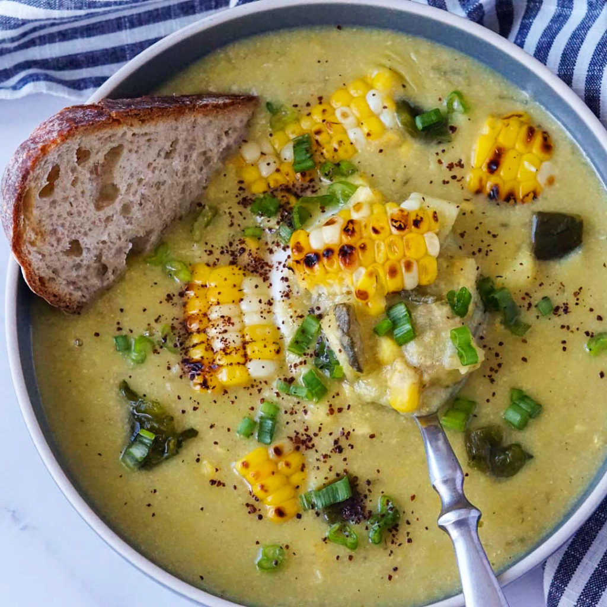

Recipes
Double Chocolate Cookies

My daughter learned to make these cookies at a baking camp at Zingermanns and has tweaked the recipe to fit the taste buds of her siblings. They are extremely sugary so the salt helps to balance it. Note, these cookies are best eaten very quickly.
Recipe Ingredients
- Unsalted butter
- Granulated Sugar
- Packed light or dark brown sugar
- Large egg
- Pure vanilla extract
- Semi-sweet chocolate chunks (melted)
- All-purpose flour
- Natural unsweetened cocoa powder
- Baking soda
- Salt
- Semi-sweet chocolate chunks
Recipe Steps
- In a mixing bowl cream together the butter, granulated sugar, and brown sugar
- Add the egg and vanilla extract and beat well
- Add the melted chocolate
- In a separate bowl combine the flour, baking soda, cocoa powder and salt
- Combine the wet and dry ingredients
- Add the unmelted chocolate chunks.
- Form 15 cookies and place on a baking sheet.
- Cook for 12 to 13 minutes at 350 degrees.
Additional Food images


Corn Pablano Chowder
Recipe Ingredients
One of my favorite recipes for the fall and winter. It is a little spce, wam and coy. Perfect for those chilly days.
- 2 tablespoons unsalted butter
- 1/4 cup flour
- 1 medium onion, diced
- 2 cloves garlic, minced
- 1 celery stock
- 1/4 teaspoon cayenne pepper
- 4 cups vegetable broth
- 2 cups whole milk
- 1 lb potatos
- 4 cups fresh or frozen corn kernels
- 2 poblano peppers, seeded and diced
- Salt
- Pepper
Recipe Steps
- Melt the butter in a large pot over medium heat.
- Add the flour and cook, stirring constantly, until the mixture is golden brown, about 3 minutes.
- Add the flour and cook, stirring constantly, until the mixture is golden brown, about 3 minutes.
- Add the broth, milk, potatoes, corn, and poblano peppers and bring to a boil.
- Reduce heat and simmer until the potatoes are tender, about 15 minutes.
- Season to taste with salt and pepper.
Blueberry Scones
I love scones with coffee in the morning, and they are really easy to make!
Recipe Ingredients
- 2 cups all-purpose flour
- 1/3 cup sugar
- 1 teaspoon baking powder
- 1/4 teaspoon baking soda
- 1/2 teaspoon salt
- 8 tablespoons unsalted butter, cold
- 1/4 cup heavy cream
- 1 large egg
- 1 cup blueberries
- Sugar to top
Recipe Steps
- Preheat oven to 400 degrees F.
- Combine flour, sugar, baking powder, baking soda, and salt in a large bowl.
- Cut butter into flour mixture on the large holes of a box grater; use your fingers to work in butter (mixture should resemble coarse meal with butter arount pea sized), then stir in blueberries.
- Whisk together cream and egg in a small bowl, then stir into flour mixture until large dough clumps form. Use your hands to press the dough against the bowl into a ball. (The dough will be sticky in places, and there may not seem to be enough liquid at first, but as you press, the dough will come together.)
- Separate into equal sized balls and place on baking seet. Sprinkle with sugar. Bake until golden, about 15 to 17 minutes. Cool for 5 minutes and serve warm or at room temperature.